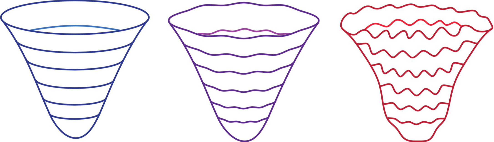

Quantum gravity, as formulated by the path integral over spacetime manifolds interpolating between two three-geometries has over the last decades received a lot of interest (Hartle and Hawking, Vilenkin, Linde, Verlinde and many others). The central equation in this paradigm, the Wheeler-DeWitt equation, has been known since the late '60s. However, so far there is no generally accepted framework for its evaluation and interpretation. As a result, predictions made with the Wheeler-DeWitt equation vary and are often difficult to interpret.
In this project, we attempt to construct a mathematically rigorous framework for quantum gravity using the Lorentzian path integral by introducing a new mathematical technique known as Picard-Lefschetz theory. Picard-Lefschetz theory is an application of Cauchy's integral theorem, which can be used to efficiently evaluate convergent oscillatory integrals. This technique can in practice be understood as a generalization of both the Wick rotation and the i𝜀 prescription. Using Picard-Lefschetz theory we have reevaluated both Hartle and Hawking's no-boundary and Vilenkin's tunneling proposal for the beginning of the universe. We also studied the Bunch-Davies vacuum in quantum de Sitter spacetime. We have concluded that the Lorentzian path integral for these proposals is well-defined but nevertheless leads to unacceptable large fluctuations.
This is work in collaboration with Neil Turok, Jean-Luc Lehners, and Alice di Tucci.
Alice di Tucci, Job Feldbrugge, Jean-Luc Lehners, Neil Turok. Quantum Incompleteness of Inflation. 2019. [arXiv][pdf]
Job Feldbrugge, Jean-Luc Lehners, Neil Turok Inconsistencies of the New No-Boundary Proposal. 2018. [arXiv][pdf]
Job Feldbrugge, Jean-Luc Lehners, Neil Turok No Rescue for the No Boundary Proposal. 2017. [arXiv][pdf]
Job Feldbrugge, Jean-Luc Lehners, Neil Turok No smooth beginning for spacetime. 2017. [arXiv][pdf]
Job Feldbrugge, Jean-Luc Lehners, Neil Turok Lorentzian Quantum Cosmology. 2017. [arXiv][pdf]
